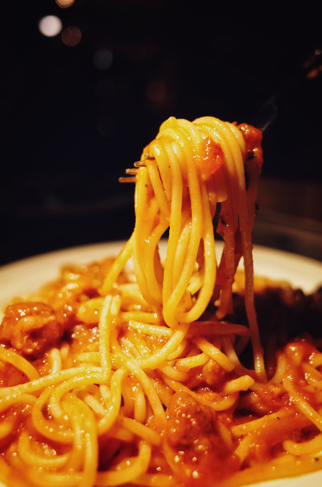

Spaghetti

Description
Experience the simplicity and comfort of a classic spaghetti recipe. Our dish features al dente pasta, coated in a savory, homemade tomato sauce and garnished with grated Parmesan cheese. Whether you're seeking a quick weeknight meal or a timeless Italian favorite, our spaghetti recipe promises a delicious, satisfying dinner that's loved by all.
Discover how to create the perfect plate of spaghetti with our straightforward recipe.
Ingredients
- Spaghetti pasta
- Tomato sauce (homemade or store-bought)
- Ground beef or ground turkey (optional)
- Olive oil
- Chopped onions and garlic
- Italian seasonings (e.g., basil, oregano)
- Salt and pepper
- Grated Parmesan cheese
Steps
- Cook the Spaghetti:
- Bring a large pot of salted water to a boil.
- Add the spaghetti and cook according to the package instructions until it's al dente. Drain the pasta and set it aside.
- Prepare the Sauce:
- In a separate pan, heat olive oil over medium heat.
- Add chopped onions and garlic and sauté until they're soft and fragrant.
- Optional Meat Sauce:
- If using ground beef or turkey, add it to the pan and brown it, breaking it into small pieces as it cooks.
- Add Tomato Sauce:
- Pour in the tomato sauce, and season with Italian seasonings, salt, and pepper. Simmer the sauce for about 10-15 minutes to let the flavors meld.
- Combine Pasta and Sauce:
- Toss the cooked spaghetti with the tomato sauce until the pasta is well-coated.
- Serve:
- Plate the spaghetti, and garnish with a generous sprinkle of grated Parmesan cheese.